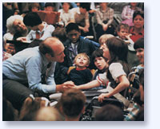
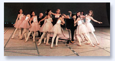
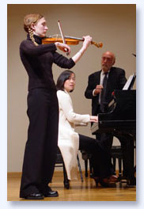
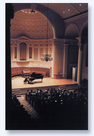

|
For
over 35 years Lorin Hollander has led Artist in Residence
intensives at nearly 350 colleges, universities and conservatories
and in numerous communities throughout the world. Campus residencies,
lasting several days to a week or more, are designed to fulfill
the comprehensive needs of the whole student while preparing
them for multidisciplinary work in the real world. In outreach
community residencies Hollander works with arts organizations,
healthcare and wellness institutions and centers for lifelong
learning with the commitment of empowering vibrant community.
- A multi-cultural understanding of the nature of
being human
- Nurturing the creativity and humanity of our young
people
- Stagefright in performance and everyday life
- Visionary and transformative education through
music
- Training for effective participation in outreach
while embracing the role of leader in the community
through music
- Enlightened mentorship in music
- Preventing the violent, addictive and suicidal
dysfunctions in our youth – addressing spiritual
bankruptcy
|
- Education of the highly gifted
- Music and planetary survival – the most urgent
issues of our time
- Music, vibrations and sacred geometry – the
causative principles forming nature
- Music, the divine principle – cosmos and
evolving consciousness
- Survival of consciousness beyond death
- Music, mythology and mystical revelation
- Empowering seniors as elders
- Spiritual and integral healing – music and
the brain research
|
| Unleashing the interwoven dimensions
of creativity, intuition and vision – the birthright
of all human beings – is the core of all residency
events. This creates the possibility for lasting personal,
artistic and spiritual growth. |
 |
|

|
- Master classes in music as a metaphor for life
- Workshops on stagefright, stress and the realities
of performing
- Coaching chamber music
- Interdisciplinary symposia
- Lectures and convocations
- Seminars with teachers and faculty: nurturing creativity
and mentorship
- Forums of inquiry and research into the creative
process
- Lecture/recitals: symphonic weaving of music and
ideas
- University and youth orchestra rehearsals and performances
– as conductor and/or soloist
- Recitals
- Outreach into the community
|
For
inquiries and more information, please contact:
Tara
Hollander
207.567.3219 |
|  |
“Classical music reflects
the highest reaches of the human soul. It touches the
most exquisite, elegant, crystalline structures of creative
vision and is imbued with the awesome glory of human emotion.
Because of this, it will always live, the way truth has
always lived.” |
|